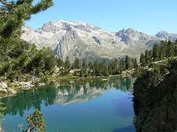
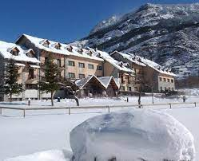
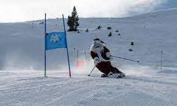

Cerler
-  Informacion
-  Alojamiento
-  Actividades
Informacion
Si quieres disfrutar de las bajadas más largas del Pirineo, Cerler es tu estación.
Sector Cerler
Cuenta con el mayor desnivel esquiable del Pirineo (1.130 metros) y con 68 pistas aptas para distintos niveles repartidas a lo largo de dos valles (Cerler y Ampriu) en los que encontrarás todos los servicios necesarios.
Si vas con niños, éstos lo pasarán en grande en las dos skytiáreas y en el jardín de nieve.
Y si es la primera vez que visitas Cerler, los embajadores te mostrarán encantados los mejores rincones de la estación.
Alojamiento
-
Hotel San Antón
- Parking
- Guardaesquís
- Restaurante
- Admite mascotas
-
Hotel Daimó
- Parking
- Ascensor
- Guardaesquís
- Televisor
-
Hotel Selba d'Ansils
- Wifi gratuita
- Restaurante
- Parking
- Guardaesquís
-
Hotel Ciria
- Restaurante
- Ascensor
- Guardaesquís
- Televisor
-
Hostal Parque Natural
- Wifi gratuita
- Restaurante
- Parking
- Admite mascotas
Actividades
- Skyline
-
El Rincon Del Cielo
En Rincón del Cielo, un increíble mirador con una panorámica que incluye los picos más altos del Pirineo, contemplaremos su excepcional puesta de sol acompañados de una copa de champagne.
- Cerler 9KM
-
El descenso interminable por el que atravesarás algunas de las pistas más emblemáticas de la estación, bosques y caminos serpenteantes… ¿preparado para la 9Km?
- Funny Truck
-
Una nueva pista en el sector de Basibé llena de obstáculos y módulos interactivos ideada para el disfrute de toda la familia
Puentes, xilófonos, túneles… divertidísimos retos pensados para todo tipo de esquiador, desde los más pequeños de la casa hasta los que busquen un momento especial en su jornada de esquí.
- Bordercross
-
Otra nueva pista azul en Basibé llena de obstaculos, con peraltes, dubies y saltos para aquellos que tengan a partir de un nivel intermedio de esquí.